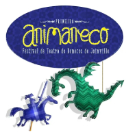

Programação Resumida
Joinville
-
Dia 02/08/2024 (sexta-feira)
- 9H às 13H - 5º Seminário de Teatro de AnimaçãoGalpão de teatro da AJOTE
- 11H - Abertura de Malas dos Mestres de Teatro de Bonecos - Galpão de teatro da AJOTE
- 15H às 17H - 4ª Mostra de Teatro Lambe-Lambe - praça do CEU - Aventureiro
-
Dia 03/08/2024 (sábado)
- 9H às 13H - 5º Seminário de Teatro de Animação - Galpão de teatro da AJOTE
- 11H - Abertura de Malas dos Mestres de Teatro de Bonecos - Galpão de teatro da AJOTE
- 15H às 17H - 4ª Mostra de Teatro Lambe-Lambe - Parque São Francisco no Adhemar Garcia
Espetáculos
Os espetáculos do 6º Animaneco prometem encantar e surpreender o público. Este ano, o festival contará com cinco espetáculos convidados de renome e dez espetáculos selecionados através do edital do 6º Animaneco, todos com entrada gratuita.
Você pode reservar seu ingresso antecipadamente pelo site da Enjoy Ticket e retirá-lo uma hora antes no local do espetáculo. Além disso, encorajamos a contribuição espontânea de 1kg de alimento não perecível, que será doado ao Mesa Brasil SESC, fortalecendo nosso compromisso social. Venha prestigiar e vivenciar momentos inesquecíveis no Animaneco!
Espetáculo (Velhos) Viejos
Velhos é o primeiro espetáculo da trilogia sobre a velhice. Os 8 personagens são bonecos de diferentes técnicas e tamanhos. Desde personagens maiores que uma pessoa até bonecos manipulados com um pé. Estes velhos aqui reunidos, velhos personagens, mostram-se como são, não têm dúvidas, resistiram à prova do tempo à sua própria maneira. São capazes de coisas que eu sinto que são extraordinárias. São homens velhos que estão aqui e ali. É fácil encontrá-los, talvez um dia sejamos nós.
Na Argentina desde crianças chamamos à nossa mãe «velha». Os pais brincam com isso dizendo que os ofende, argumentando que velhos são os trapos, mas gostam porque sabem que esta expressão depreciativa está cheia de ternura. Eles sabem disso pelo tango.
Classificação indicativa: 14 anos

Entre Mundos
Entre mundos é um espetáculo com máscaras teatrais, sem utilização de palavras, e propõe uma experiência sensorial para o público infantil. Na peça, duas criaturas nascem diante dos olhos do público. São seres embrionários, com formas e tempo próprios. Movidos pela curiosidade, logo descobrem um misterioso portal que lhes permite transitar por diferentes dimensões e, nesta graciosa aventura, conhecem alguns lugares inusitados como a terra dos dinossauros, o fundo do mar, a agitação de uma grande cidade, a aridez do deserto, o interior escuro de uma caverna, entre outros mundos.
No palco, duas criaturas nascem com formas e tempo próprios. Movidas pela curiosidade, logo descobrem um misterioso portal que lhes permite transitar por diferentes dimensões e conhecer alguns lugares inusitados como a terra dos dinossauros, o fundo do mar, a agitação de uma grande cidade, a aridez do deserto e o interior escuro de uma caverna, entre outros mundos.
Classificação indicativa: livre


Confira a programação completa
Edições Passadas
-
1º Animaneco
O 1º ANIMANECO Festival de Teatro de Bonecos de Joinville, nasceu em 2017 e em sua primeira edição reuniu colaborativamente 8 Cias de Teatro sendo 2 de Joinville e 6 de outras cidades (Itajaí, Canelinha, Jaraguá do Sul, Florianópolis e Rio do Sul). O evento foi idealizado por Cassio Correia, ator e produtor cultural com o objetivo de comemorar o dia 27 de abril Dia Nacional do Teatro de Bonecos e o Dia Internacional do teatro de Marionetes.
 -
2º Animaneco
Devido ao sucesso da primeira edição, no ano seguinte o festival contou com mais espetáculos e também dias de apresentações.
Uma das novidades foi a exposição “Por Favor, Mexa”, onde crianças e adultos podiam interagir com bonecos, aguçando a criatividade.
A segunda edição do festival também contou com o Teatro Lambe-lambe, que consiste num espetáculo curto em miniatura, em caixas pequenas.

-
3º Animaneco
Devido ao sucesso da primeira edição, no ano seguinte o festival contou com mais espetáculos e também dias de apresentações.
Uma das novidades foi a exposição “Por Favor, Mexa”, onde crianças e adultos podiam interagir com bonecos, aguçando a criatividade.
A segunda edição do festival também contou com o Teatro Lambe-lambe, que consiste num espetáculo curto em miniatura, em caixas pequenas.

Vídeos
Oficina de Bonecos Gigantes
Confira um pouco de como foi nossa oficina de Bonecos Gigantes com o nosso Mestre: @naza_bonecos
Espetáculo “Viejos"
Convidamos você para rir e se emocionar com o espetáculo “Viejos”, de Sergio Mercurio, da Argentina!